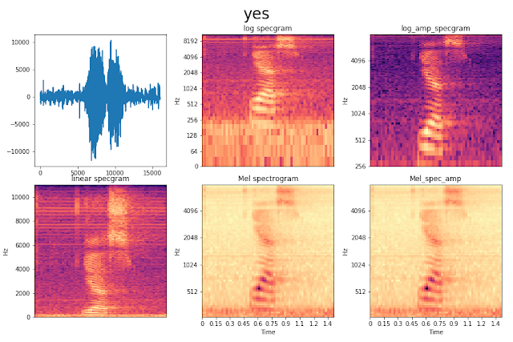
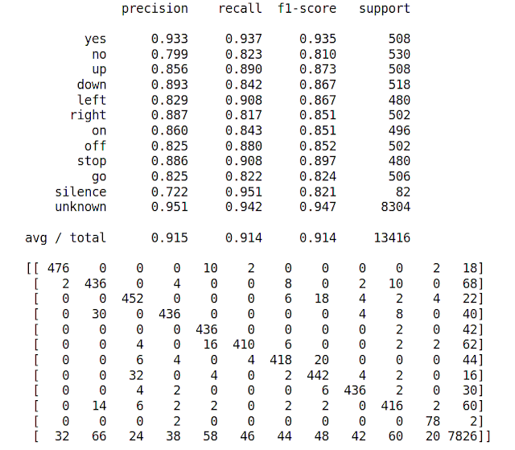
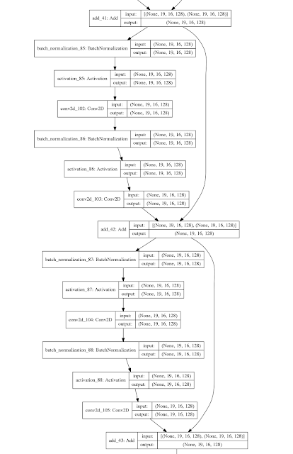
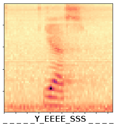

Read this story on Medium.com
From November 2017 to January 2018 the Google Brain team hosted a speech recognition challenge on Kaggle. The goal of this challenge was to write a program that can correctly identify one of 10 words being spoken in a one-second long audio file. Having just made up my mind to start seriously studying data science with the goal of turning a new corner in my career, I decided to tackle this as my first serious kaggle challenge. In this post I will talk about ResNets, RNNs, 1D and 2D convolution, Connectionist Temporal Classification and more. Let's go!
Exploratory Data Analysis
The training data supplied by Google Brain consists of ca. 60,000 1-second-long .wav files in 32 directories that are named by the word spoken in the files. Only 10 of these are classes you need to identify, the others should go in the 'unknown' or 'silence' classes. There are a couple of things you can do to get a grip on the data you're working with. This data set is not completely cleaned up for you. For example, some files are not exactly 1 second long. And there are no 'silence' files as such. What you get is a few longer recordings with 'background' noises that you can split up into 1 second fragments yourself. You can also mix background noises with word files to get some different 'environments' for your sounds to live in during training.
One important thing you need to do to clean up the data was mentioned in a Discussion comment on Kaggle: There are quite a few files with extremely low sound volumes. Some of these are corrupt and only contain noise and some are basically background noise without any spoken word. To remove or correctly label these files it helps to sort all files on dynamic range of the output volume and then check if there's a threshold minimum sound level below which all files are basically silence. It turns out that output volume by itself is not sufficient to separate corrupt/silence from good files, so I ended up doing some manual cleaning by listening to suspect files and looking at a lot of spectrograms (see below).
Preprocessing
When you are classifying audio you can either use the raw wav data itself or you can transform the audio into spectrograms. A spectrogram is a visual representation of sound with a time and a frequency axis and pixel intensities representing the amplitude or energy of the sound at that moment and at that frequency. There's bunch of parameters to play around with when making spectrograms that will affect how much information can be extracted from the frequency or the time domains. I haven't done an exhaustive analysis of all these parameters with regards to suitability for deep learning because it would take forever. Instead I plotted a bunch of spectrograms with different dimensions and intensity ranges etc for different words and picked what looked easiest to classify as a different word visually.
 Some different visualizations of the audio source of someone saying 'yes'. I chose the spectrogram in the right bottom as input for most of my networks. The advantage of using spectrograms over raw wav data is that you can approach it as an image classification problem, which most of us are already very familiar with. I attempted both approaches.
To speed up eventual training of the network I decided to do most of the preprocessing separately and save individual train and validation sets as numpy arrays in .npy files. The amount of data is small enough that this can be done on my home pc. Google Brain suggests that you split the data in 'train' 'validation' and 'test' sets based on file names in a 'validation.txt' and 'test.txt' file that they supply. Since they also supply a test set on Kaggle that is used for the leaderboard scoring I decided to combine the 'validation' and 'test' text files into one validation set. Preprocessing included creating spectrograms, normalizing around zero, creating 'label' or 'Y' arrays with integers 0–11 for the ten main classes plus 'silence' and 'unknown'. For the CTC model I did not use the 'unknown' label. All 32 classes were treated as equal.
Because I approached this challenge as a deep learning training exercise I implemented a bunch of different network designs. Getting practical training like this was fantastic. I learned more from this one project than I did in the ten MOOCs I started before. (Ok, I exaggerate slightly). I will discuss a few of my design attempts and the things to pay attention to when implementing them.
Raw wav files, 1D convolutions
With spectrograms you use a specific algorithm to extract features from wav files, but you have to fine tune a bunch of parameters. A well designed neural network should be able to learn features from the raw wav files by itself and potentially get more informative features than one could get from a spectrogram. This first model is an attempt to do that. The initial design was heavily inspired by a Kaggle discussion post by user ttagu99. This is the result of an early attempt with a 6-layer 1D convolutional network.

The network scores on the validation set. Top: sklearn classification report. Bottom: sklearn confusion matrix.
It is not very effective yet. Some of the mistakes it makes are easy to understand. It often confuses 'no' with 'go' and 'off' with 'up'. Theses words have very similar vowel sounds, so confusion can be expected. Some mistakes are less obvious: does it really think 'right' is 'left' 16 times? Maybe it's the 't' at the end? This image also illustrates how unbalanced the classes are if you combine all the 'extra' classes into one 'unknown' class (~500 vs ~8300 samples). I dealt with this by using the 'class_weight' argument in the Keras fit function. This parameter accepts a dictionary mapping classes to a weight float and 'rebalances' the training set by punishing misclassification of an underrepresented class more heavily. Another way of balancing the training set better is by creating batches with equal amounts of samples from each class. I assume one would use the leftover 'unknown' samples in subsequent epochs, but I haven't tried this myself. I don't know which balancing trick is best. After some tweaking of the Conv1D model I got to a score on the Kaggle leaderboard of around 83%. Not very good yet, but instead of tweaking more on this model now I wanted to try some other network architectures.
ResNet
A residual neural network, or ResNet, is basically a deep convolutional NN with shortcuts. Every couple of layers there is an identity connection back to a layer a few levels up. These shortcut connections are thought to help the network generalize better. And this definitely works: I don't need any dropout layers anymore. What happens is that the network depth defaults to using as many shortcut connections as possible. This keeps the network small and therefore helps generalization. The residual layers in between the shortcuts are updated only when needed.

Small subset of ResNet model with two shortcut connections
Blocks of 2 Conv2D layers with BatchNormalization and ReLu activation are separated by a connection layer adding the previous connection layer to the output of the blocks. Every three of such blocks is then further separated by a Conv2D layer with stride 2 in order to learn larger scale features. In Keras, this is how I implemented this:
filters = [32,64,128] input_img = Input(shape = (61,75,1))
def block(filters, inp):
inp = BatchNormalization()(inp)
act_1 = Activation('relu')(layer_1)
conv_1 = Conv2D(filters, (3,3), padding = 'same')(act_1)
layer_2 = BatchNormalization()(conv_1)
act_2 = Activation('relu')(layer_2)
conv_2 = Conv2D(filters, (3,3), padding = 'same')(act_2)
return(conv_2)
x = Conv2D(filters[0], (3,3), padding = 'same')(input_img)
y = MaxPooling2D(padding = 'same')(x)
x = Add()([block(filters[0], y),y])
y = Add()([block(filters[0], x),x])
x = Add()([block(filters[0], y),y])
x = Conv2D(filters[1], (3,3), strides = (2,2), padding = 'same',
activation = 'relu')(x)
y = Add()([block(filters[1], x),x])
x = Add()([block(filters[1], y),y])
y = Add()([block(filters[1], x),x])
y = Conv2D(filters[2], (3,3), strides = (2,2), padding = 'same',
activation = 'relu')(y)
x = Add()([block(filters[2], y),y])
y = Add()([block(filters[2], x),x])
x = Add()([block(filters[2], y),y])
x2 = GlobalAveragePooling2D()(x)
x2 = Dense(len(classes), activation = 'softmax')(x2)
This model performed really well. It reached almost 98% accuracy on the validation set and 85% on the kaggle leaderboard. This discrepancy between validation and test sets is concerning, and something I will get to in more depth below, but it has to do with the test set containing a lot of words that are not given to us in the training set. So called unknown unknowns. The next architecture I looked into to improve the model was Recurrent Neural Networks.
ResNet into RNN
One axis of a spectrogram represents the frequency and the other axis the time dimension of the sound file. There is something to be said for not treating these two dimensions as equal in a convolutional neural network. Recurrent Neural Networks or RNNs are used for modeling sequences, for example to predict what should come next. In our case they can be used to keep track of what happened first, and what came after, something that a ResNet wouldn’t do. What I mean is that a normal convolutional network might think that ‘yse’ and ‘yes’ are the same word, because it has no notion of the sequence of the sound. What I tried to do was to add an RNN layer to the end of my pretty well-performing ResNet and play around with that. As you can see in the code above there is one MaxPooling layer and two Conv2D layers with stride 2 which reduce the size of the input from (61,75,1) to (8,10,128) at the end of the network. The first dimension here (8) represents the time dimension, but RNNs take 3D inputs and (including the batch) our ResNet takes 4D. So to get from the final residual+shortcut layer into an RNN layer we have to use a Reshape layer in Keras. This is how you can do this:
x = Reshape((8,1280))(x)
x = TimeDistributed(Dense(512))(x)
x_RNN = LSTM(256)(x)
We combine the 2nd and 3rd dimensions into one large vector resulting in 8 timepoints with 1280 numbers describing the convolved frequency distributions. A TimeDistributed wrapper layer is required to get the RNN layer (LSTM in this case) to use the 8 time rows as sequential inputs. After a couple of tweaks and iterations a combined ResNet RNN model gave an 87% accuracy on the Kaggle leaderboard. My best try and good for circa 200th place out of 1300 or so. I thought this was pretty ok for my first Kaggle project. But I still felt like trying some stuff and learning more deep learning tricks.
Connectionist Temporal Classification (speech-to-text)
Around the time of the submission deadline for the Kaggle challenge the final module of Andrew Ng’s Coursera deep learning with python course about sequence models was opened to the public. I had applied some RNN layers in the combined model above, but I did not really know how it worked, so I took the course to learn all about RNNs. This post is not a review for this course, but suffice it to say I would recommend it to everyone interested in the math internals of RNNs. Besides the basics and not-so-basics of RNNs, I was particularly intrigued with a speech-to-text method that Andrew mentions but doesn’t really go deeper into called Connectionist Temporal Classification, or CTC. I was really excited by this because I have had an idea for a project in the back of my mind involving speech-to-text for a while, but it was still very abstract, I didn’t know at all where to start. But now someone was actually giving me a very concrete place to start.
A speech-to-text model takes a spectrogram (or raw wav data) as input and outputs letters or words. What such a network needs to do is identify so-called phonemes in each RNN input, translate them into letters and combine letters into correct words.

So for spoken English words, you want to network to output one-hot vectors with length 28 (the alphabet plus ‘space’ and ‘blank’) for each timepoint and then somehow determine how ‘wrong’ the prediction is so we can do backprop. This is what CTC does. It takes the output , ” _ Y _ EEEE _ SSS _ _ ”, for example and reduces it to ‘yes’ by collapsing connecting multiples of letters and ignoring ‘blanks’ between different letters. If the output gives a ‘blank’ between two identical letters (“E _ E”) it considers it as two separate letters. A ‘blank’ should not be confused with a ‘space’, but I didn’t have to worry about this because all my inputs were single words. With Keras you can use the backend function ctc_batch_cost() for the implementation, but it requires four parameters (y_true, y_pred, input_length and label_length) instead of only y_true and y_pred, which means you can’t use it as a conventional loss function and plug it into your compile statement. I found a repo on github with a working Keras implementation of Baidu’s DeepSpeech model, which uses CTC, and took the parts I needed for mine.
y_pred = TimeDistributed(Dense(output_dim, activation = 'softmax'))(X)
# ctc
y_true = Input(name='the_labels', shape=[None,], dtype='int32')
input_length = Input(name='input_length', shape=[1], dtype='int32')
label_length = Input(name='label_length', shape=[1], dtype='int32')
# Keras doesn't currently support loss funcs with extra parameters
# so CTC loss is implemented in a lambda layer
loss_out = Lambda(ctc_lambda_func, output_shape=(1,),
name='ctc')([y_pred,
y_true,
input_length,
label_length])
test_model = Model(inputs = X_input, outputs = y_pred)
model = Model(inputs = [X_input,
y_true,
input_length,
label_length],
outputs = loss_out)
Here y_pred is the TimeDistributed output of the RNN with length 28 (output_dim) one-hot vectors. Together with the other three parameters it is fed into the ctc_batch_cost function which is wrapped in a Lambda layer and then I create one model for training (“model”) and one for testing/validating (“test_model”) that doesn’t include the Lambda layer. When you run model.Compile() it needs a loss function, so you give it a dummy function that takes y_true and y_pred as parameters and simply returns y_pred. Then, training the model you give the .fit() function a list of four inputs:
- the training set,
- an array y_true with alphabet indexes of the labels, padded with the ‘blank’ index to a common length for all samples ([25, 5, 19, 27, 27, 27, 27, 27] for ‘yes’),
- a one-dimensional array input_length with the length of your ‘alphabet’ for each sample (len(Y_train) 28’s as a vector), and
- a one-dimensional array label_length with the length of the y_true vectors (8 for me) len(Y_train) times.
The outputs parameter of the .fit() function takes an array of zeros with length len(Y_train), our dummy loss function does nothing with it anyway. I think it’s very exciting that I got this to work. Using the raw output of this model (the upstream layers are a Conv1D and two Bidirectional LSTMs) reaches a score of 83% on the Kaggle LB, but this is without trying to run some kind of spellcheck or language model on the predicted words. I saw a lot of “ye”’s and “riget”s etc. I will play around with it some more and see what more I can get out of it.
Outlier detection
As I shortly mentioned above, the test set contains a lot of words, and also voices, that are not in the training set. This means that to get a really good score your model has to learn features of unknown unknowns. From what I have read on the Discussion forum at Kaggle after the deadline most of the top scorers used a lot of feature engineering to create more “unknown” samples. You can for example cut and paste pieces of words together to create new words, or you can use pitch shifting or reversing the samples. I tried a bit of this but was not very successful. Another thing I saw many top scorers do is unsupervised training on the test set to learn what kind of features are present there that are not in the train set. This seemed to give a large improvement in scores, but it feels a bit like cheating to me.
I myself took quite a lot of time trying different forms of outlier or anomaly detection. This means trying to get the network to reject sounds that it has not heard before and put them in the ‘unknown’ class. I tried training autoencoders and variational autoencoders on the 10 main classes, but these models always remained equally good at decoding unseen spectrograms as they were at decoding the inputs I trained with. I tried open set recognition but I gave up after trying for a few weeks to understand exactly how they were doing this. In the end it would have been nice if some of these techniques improved my models, but if not a super score on the leaderboard studying this did give me a lot of new knowledge and experience so I’m glad I did.
Conclusion
It’s been 15 years since I left University. It was great fun to learn so much in so little time again. Besides getting a better idea about what it takes to do speech recognition, I also learned a bit more about doing Kaggle challenges and what it takes to score high. When I started I thought that if I find some trick that the other participants didn’t then I would score better than them, but now I realize much better what it really takes to score high. Those guys definitely know a lot more tricks than I do!
Originally published with Towards Data Science
Implementation of the ResNet and CTC models at https://github.com/chrisdinant/speech
Δ9